; picked in K562 (state 9:DNaseU, DNase); matched; chr2:42,165,369-42,165,663 (295bp)") 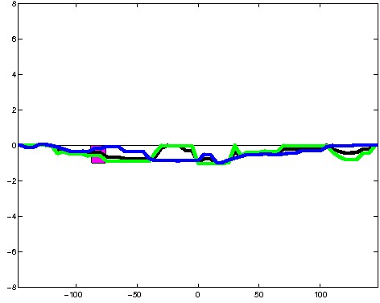
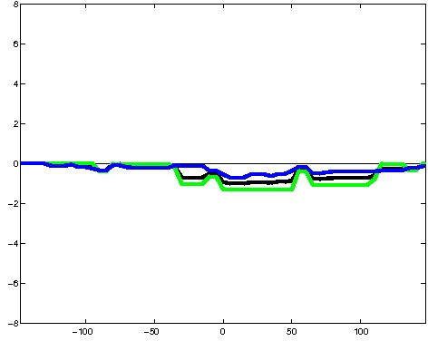
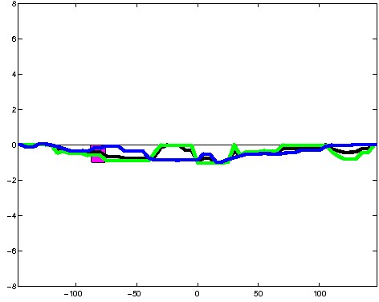
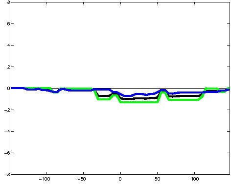
; picked in K562 (state 9:DNaseU, DNase); matched; chr1:59,594,009-59,594,303 (295bp)")
; picked in K562 (state 9:DNaseU, DNase); matched; chr3:57,014,869-57,015,163 (295bp)") 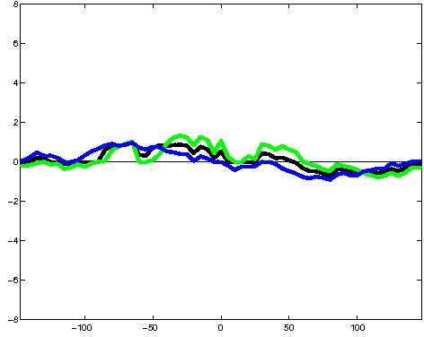
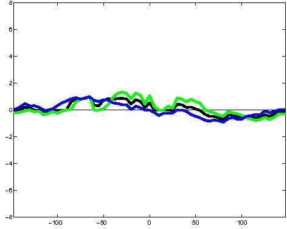
; picked in K562 (state 9:DNaseU, DNase); matched; chr3:81,762,209-81,762,503 (295bp)")
; picked in K562 (state 9:DNaseU, DNase); matched; chr12:49,180,809-49,181,103 (295bp)")
; picked in K562 (state 9:DNaseU, DNase); matched; chr11:108,336,149-108,336,443 (295bp)")
; picked in K562 (state 9:DNaseU, DNase); matched; chr3:71,240,229-71,240,523 (295bp)") 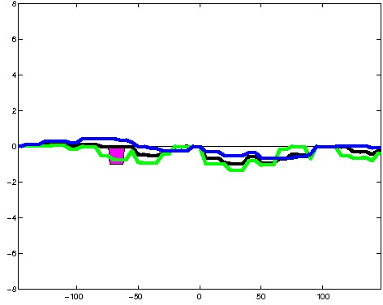
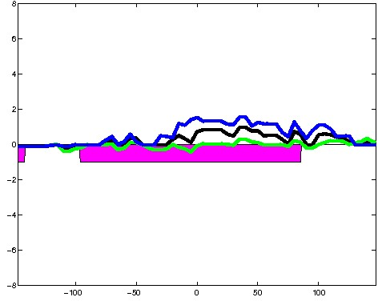
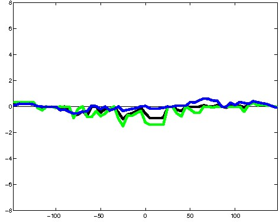
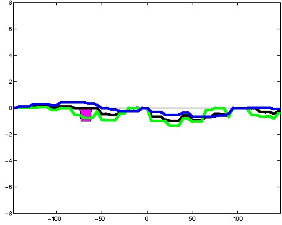
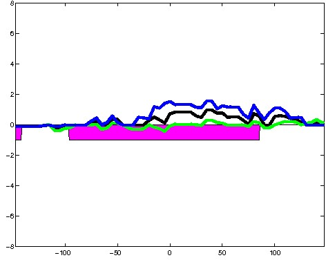
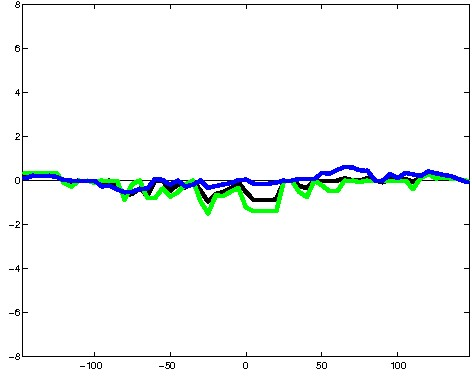
; picked in K562 (state 9:DNaseU, DNase); matched; chr18:45,617,089-45,617,383 (295bp)")
; picked in K562 (state 9:DNaseU, DNase); matched; chr9:78,948,929-78,949,223 (295bp)")
; picked in K562 (state 9:DNaseU, DNase); matched; chr17:48,489,629-48,489,923 (295bp)") 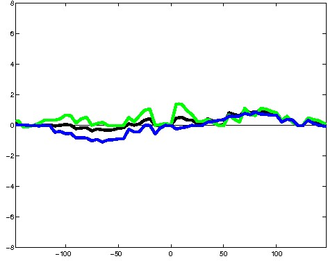
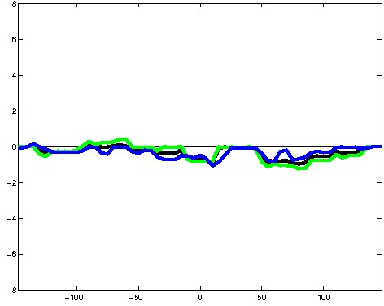
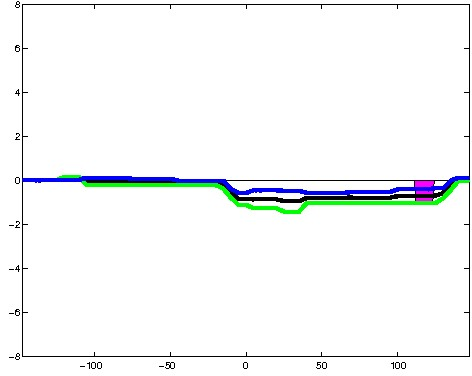
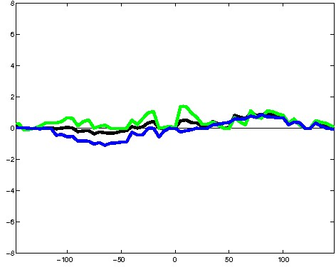
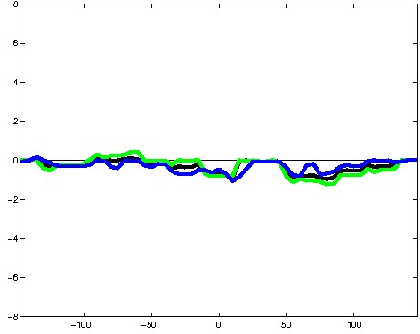
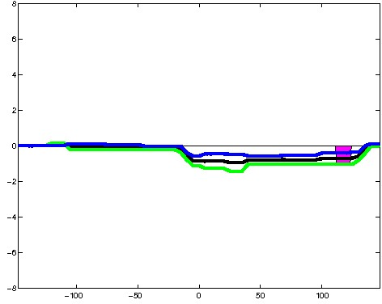
; picked in K562 (state 9:DNaseU, DNase); matched; chr1:218,550,689-218,550,983 (295bp)") 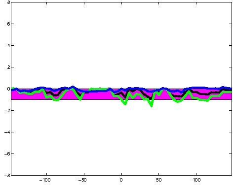
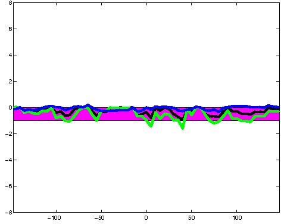
; picked in K562 (state 9:DNaseU, DNase); matched; chr8:37,785,929-37,786,223 (295bp)")
; picked in K562 (state 9:DNaseU, DNase); matched; chr7:40,387,949-40,388,243 (295bp)")
; picked in K562 (state 9:DNaseU, DNase); matched; chr2:9,485,069-9,485,363 (295bp)") 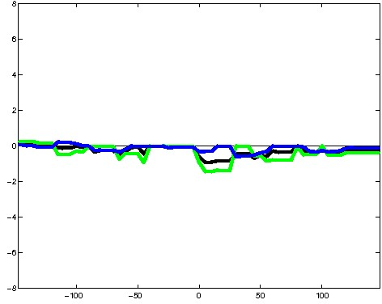
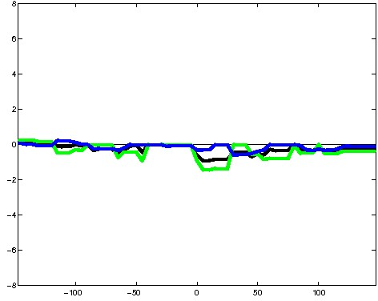
; picked in K562 (state 9:DNaseU, DNase); matched; chr11:129,906,969-129,907,263 (295bp)")
; picked in K562 (state 9:DNaseU, DNase); matched; chr7:138,104,229-138,104,523 (295bp)") 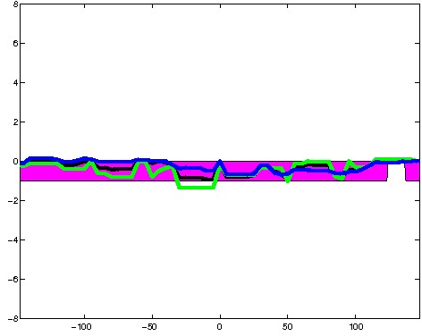
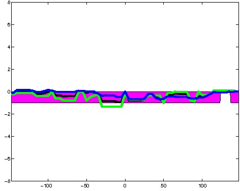
; picked in K562 (state 9:DNaseU, DNase); matched; chr11:108,379,449-108,379,743 (295bp)") 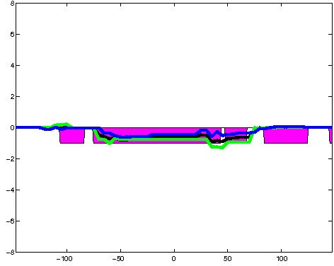
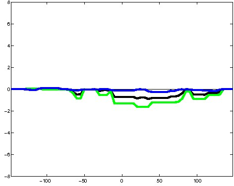
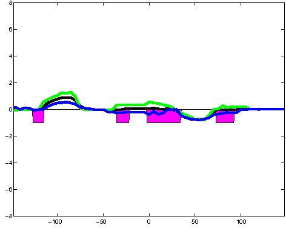
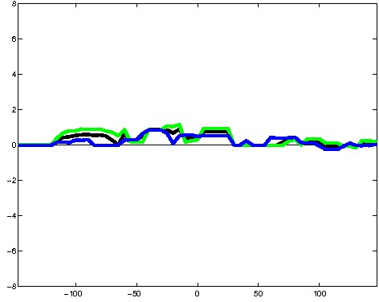
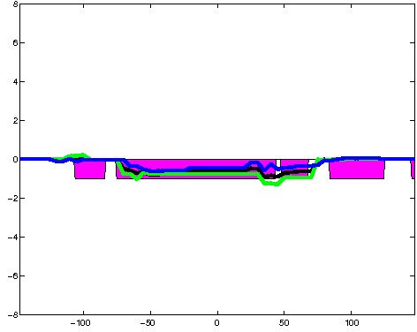
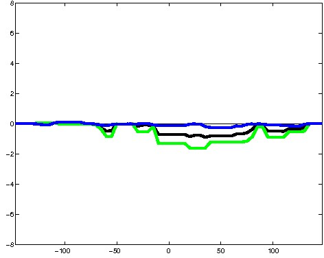
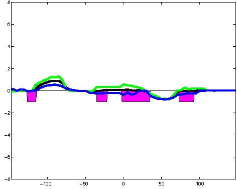
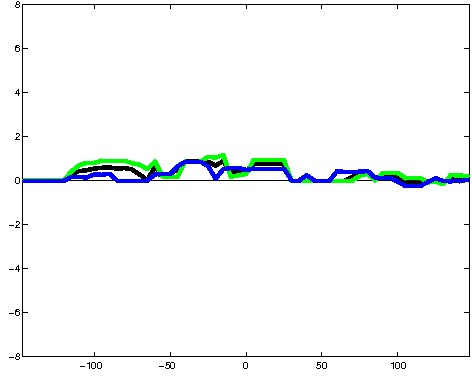
; picked in K562 (state 9:DNaseU, DNase); matched; chr20:10,508,489-10,508,783 (295bp)") 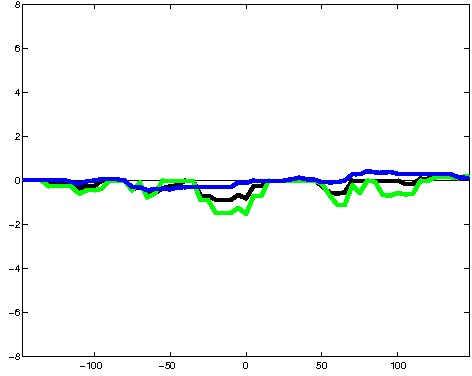
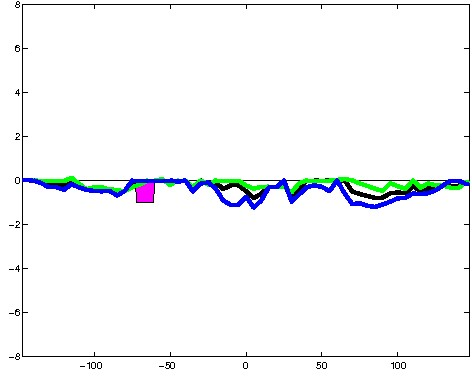
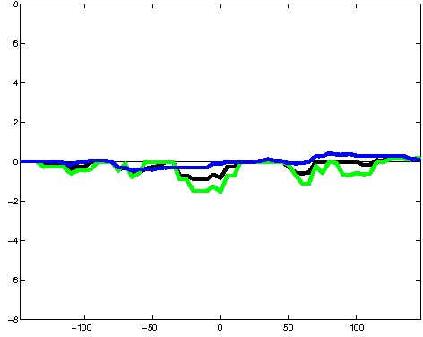
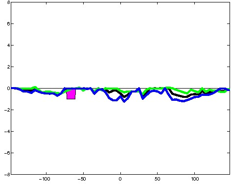
; picked in K562 (state 9:DNaseU, DNase); matched; chr13:42,178,069-42,178,363 (295bp)")
; picked in K562 (state 9:DNaseU, DNase); matched; chr8:80,793,209-80,793,503 (295bp)")
; picked in K562 (state 9:DNaseU, DNase); matched; chr1:15,433,129-15,433,423 (295bp)")
; picked in K562 (state 9:DNaseU, DNase); matched; chr2:223,360,229-223,360,523 (295bp)") 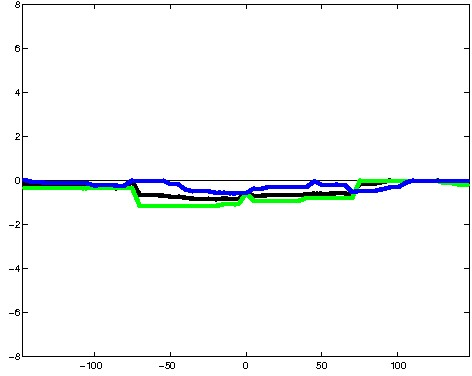
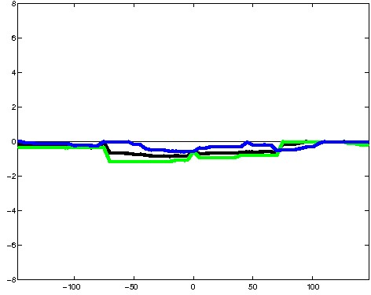
; picked in K562 (state 9:DNaseU, DNase); matched; chr17:78,137,229-78,137,523 (295bp)") 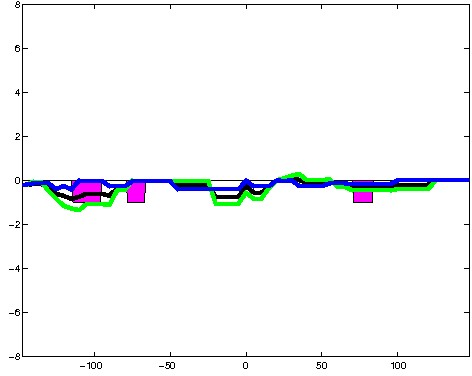
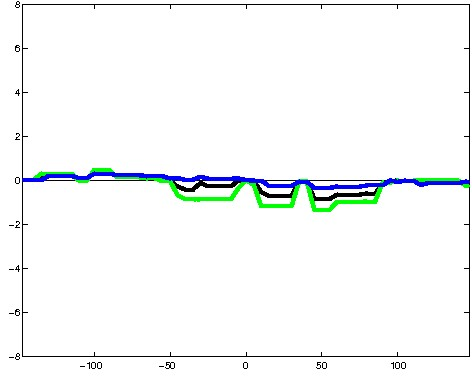
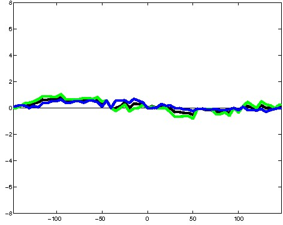
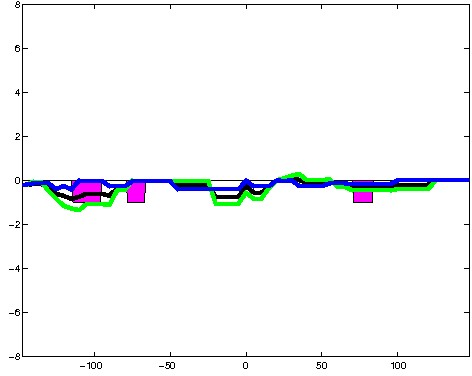
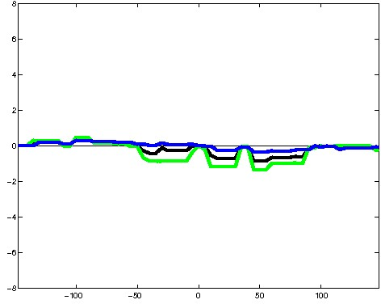
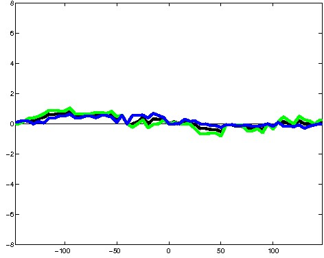
; picked in K562 (state 9:DNaseU, DNase); matched; chr14:66,316,409-66,316,703 (295bp)")
; picked in K562 (state 9:DNaseU, DNase); matched; chr19:46,766,209-46,766,503 (295bp)") 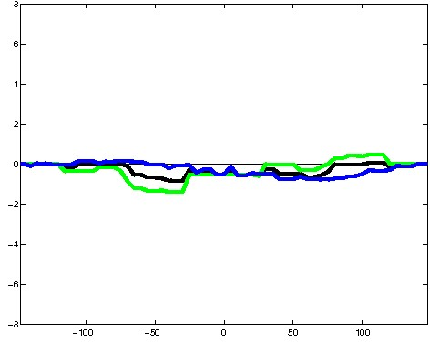
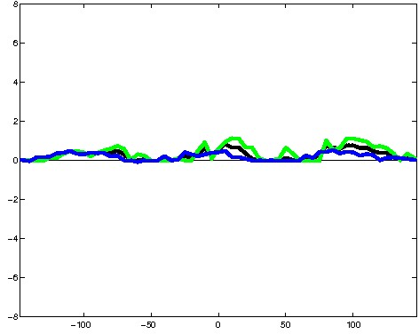
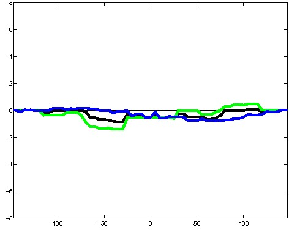
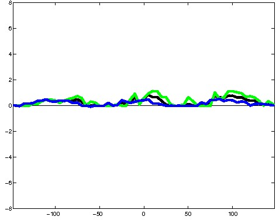
; picked in K562 (state 9:DNaseU, DNase); matched; chrX:79,573,109-79,573,403 (295bp)") 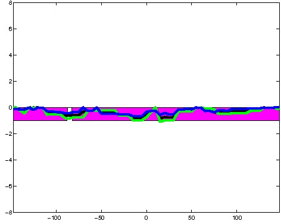
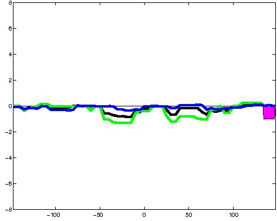


; picked in K562 (state 9:DNaseU, DNase); matched; chr1:120,858,549-120,858,843 (295bp)") 


; picked in K562 (state 9:DNaseU, DNase); matched; chr4:153,226,429-153,226,723 (295bp)")
; picked in K562 (state 9:DNaseU, DNase); matched; chrX:53,465,469-53,465,763 (295bp)")
; picked in K562 (state 9:DNaseU, DNase); matched; chr5:90,548,649-90,548,943 (295bp)") 


; picked in K562 (state 9:DNaseU, DNase); matched; chr12:18,903,069-18,903,363 (295bp)") 

; picked in K562 (state 9:DNaseU, DNase); matched; chr13:20,465,269-20,465,563 (295bp)")
; picked in K562 (state 9:DNaseU, DNase); matched; chrX:118,149,429-118,149,723 (295bp)") 


; picked in K562 (state 9:DNaseU, DNase); matched; chr4:187,392,669-187,392,963 (295bp)")
; picked in K562 (state 9:DNaseU, DNase); matched; chr8:80,697,449-80,697,743 (295bp)") 

; picked in K562 (state 9:DNaseU, DNase); matched; chr7:73,562,829-73,563,123 (295bp)")
; picked in K562 (state 9:DNaseU, DNase); matched; chrX:135,527,709-135,528,003 (295bp)")
; picked in K562 (state 9:DNaseU, DNase); matched; chrX:12,939,129-12,939,423 (295bp)")
; picked in K562 (state 9:DNaseU, DNase); matched; chr7:38,285,809-38,286,103 (295bp)")
; picked in K562 (state 9:DNaseU, DNase); matched; chr20:5,682,989-5,683,283 (295bp)")
; picked in K562 (state 9:DNaseU, DNase); matched; chr5:77,886,869-77,887,163 (295bp)")
; picked in K562 (state 9:DNaseU, DNase); matched; chr1:151,521,249-151,521,543 (295bp)") 

; picked in K562 (state 9:DNaseU, DNase); matched; chr11:67,612,789-67,613,083 (295bp)")
; picked in K562 (state 9:DNaseU, DNase); matched; chr10:16,688,729-16,689,023 (295bp)")
; picked in K562 (state 9:DNaseU, DNase); matched; chr6:53,098,189-53,098,483 (295bp)")
; picked in K562 (state 9:DNaseU, DNase); matched; chr1:93,147,669-93,147,963 (295bp)") 


; picked in K562 (state 9:DNaseU, DNase); matched; chr6:10,450,069-10,450,363 (295bp)")
; picked in K562 (state 9:DNaseU, DNase); matched; chr2:236,241,989-236,242,283 (295bp)")
; picked in K562 (state 9:DNaseU, DNase); matched; chr6:89,899,909-89,900,203 (295bp)") 

; picked in K562 (state 9:DNaseU, DNase); matched; chr5:119,476,089-119,476,383 (295bp)")
; picked in K562 (state 9:DNaseU, DNase); matched; chr22:17,912,649-17,912,943 (295bp)") 

; picked in K562 (state 9:DNaseU, DNase); matched; chr5:14,781,229-14,781,523 (295bp)")
; picked in K562 (state 9:DNaseU, DNase); matched; chr21:35,925,409-35,925,703 (295bp)") 

; picked in K562 (state 9:DNaseU, DNase); matched; chr6:119,896,949-119,897,243 (295bp)") 

; picked in K562 (state 9:DNaseU, DNase); matched; chr4:151,459,689-151,459,983 (295bp)")
; picked in K562 (state 9:DNaseU, DNase); matched; chr10:121,731,909-121,732,203 (295bp)") 

; picked in K562 (state 9:DNaseU, DNase); matched; chr10:23,089,609-23,089,903 (295bp)") 


; picked in K562 (state 9:DNaseU, DNase); matched; chrX:7,903,029-7,903,323 (295bp)") 


; picked in K562 (state 9:DNaseU, DNase); matched; chr6:89,432,789-89,433,083 (295bp)") 

; picked in K562 (state 9:DNaseU, DNase); matched; chr8:28,941,889-28,942,183 (295bp)")
; picked in K562 (state 9:DNaseU, DNase); matched; chr1:229,479,949-229,480,243 (295bp)")
; picked in K562 (state 9:DNaseU, DNase); matched; chr10:89,345,969-89,346,263 (295bp)")
; picked in K562 (state 9:DNaseU, DNase); matched; chr1:185,530,729-185,531,023 (295bp)")
; picked in K562 (state 9:DNaseU, DNase); matched; chr6:136,736,789-136,737,083 (295bp)")
; picked in K562 (state 9:DNaseU, DNase); matched; chr7:40,645,729-40,646,023 (295bp)")
; picked in K562 (state 9:DNaseU, DNase); matched; chr5:134,858,589-134,858,883 (295bp)")
; picked in K562 (state 9:DNaseU, DNase); matched; chr5:134,853,309-134,853,603 (295bp)")
; picked in K562 (state 9:DNaseU, DNase); matched; chr4:26,887,529-26,887,823 (295bp)")
; picked in K562 (state 9:DNaseU, DNase); matched; chr1:89,112,989-89,113,283 (295bp)")
; picked in K562 (state 9:DNaseU, DNase); matched; chr16:4,589,769-4,590,063 (295bp)")
; picked in K562 (state 9:DNaseU, DNase); matched; chr5:114,634,589-114,634,883 (295bp)")
; picked in K562 (state 9:DNaseU, DNase); matched; chr4:159,157,769-159,158,063 (295bp)")
; picked in K562 (state 9:DNaseU, DNase); matched; chr13:41,498,049-41,498,343 (295bp)")
; picked in K562 (state 9:DNaseU, DNase); matched; chr6:144,672,949-144,673,243 (295bp)")
; picked in K562 (state 9:DNaseU, DNase); matched; chr4:7,832,809-7,833,103 (295bp)")
; picked in K562 (state 9:DNaseU, DNase); matched; chr12:76,054,029-76,054,323 (295bp)")
; picked in K562 (state 9:DNaseU, DNase); matched; chr14:76,329,969-76,330,263 (295bp)")
; picked in K562 (state 9:DNaseU, DNase); matched; chr3:194,257,749-194,258,043 (295bp)")
; picked in K562 (state 9:DNaseU, DNase); matched; chr1:59,703,629-59,703,923 (295bp)")
; picked in K562 (state 9:DNaseU, DNase); matched; chrX:3,800,569-3,800,863 (295bp)")
; picked in K562 (state 9:DNaseU, DNase); matched; chr1:165,454,949-165,455,243 (295bp)")
; picked in K562 (state 9:DNaseU, DNase); matched; chr4:174,621,929-174,622,223 (295bp)")
; picked in K562 (state 9:DNaseU, DNase); matched; chr6:136,822,769-136,823,063 (295bp)")
; picked in K562 (state 9:DNaseU, DNase); matched; chr9:125,964,689-125,964,983 (295bp)")
; picked in K562 (state 9:DNaseU, DNase); matched; chr7:44,773,369-44,773,663 (295bp)")
; picked in K562 (state 9:DNaseU, DNase); matched; chr4:110,910,109-110,910,403 (295bp)")
; picked in K562 (state 9:DNaseU, DNase); matched; chr12:90,229,789-90,230,083 (295bp)")
; picked in K562 (state 9:DNaseU, DNase); matched; chr9:115,977,409-115,977,703 (295bp)")
; picked in K562 (state 9:DNaseU, DNase); matched; chr7:21,493,649-21,493,943 (295bp)")
; picked in K562 (state 9:DNaseU, DNase); matched; chr6:46,185,569-46,185,863 (295bp)")
; picked in K562 (state 9:DNaseU, DNase); matched; chr10:93,870,069-93,870,363 (295bp)")
; picked in K562 (state 9:DNaseU, DNase); matched; chr18:55,500,009-55,500,303 (295bp)")
; picked in K562 (state 9:DNaseU, DNase); matched; chr17:64,666,369-64,666,663 (295bp)")
; picked in K562 (state 9:DNaseU, DNase); matched; chr13:47,607,309-47,607,603 (295bp)")
; picked in K562 (state 9:DNaseU, DNase); matched; chr7:98,696,709-98,697,003 (295bp)")
; picked in K562 (state 9:DNaseU, DNase); matched; chr18:56,296,409-56,296,703 (295bp)")
; picked in K562 (state 9:DNaseU, DNase); matched; chr17:46,348,289-46,348,583 (295bp)")
; picked in K562 (state 9:DNaseU, DNase); matched; chr9:91,435,029-91,435,323 (295bp)")
; picked in K562 (state 9:DNaseU, DNase); matched; chr8:74,846,489-74,846,783 (295bp)")
; picked in K562 (state 9:DNaseU, DNase); matched; chr11:77,353,949-77,354,243 (295bp)")
; picked in K562 (state 9:DNaseU, DNase); matched; chr6:10,578,969-10,579,263 (295bp)")
; picked in K562 (state 9:DNaseU, DNase); matched; chr13:41,161,349-41,161,643 (295bp)")
; picked in K562 (state 9:DNaseU, DNase); matched; chr22:26,212,629-26,212,923 (295bp)")
; picked in K562 (state 9:DNaseU, DNase); matched; chr12:10,931,689-10,931,983 (295bp)")
; picked in K562 (state 9:DNaseU, DNase); matched; chr10:104,051,189-104,051,483 (295bp)")
; picked in K562 (state 9:DNaseU, DNase); matched; chr2:68,614,869-68,615,163 (295bp)")
; picked in K562 (state 9:DNaseU, DNase); matched; chr12:43,249,309-43,249,603 (295bp)")
; picked in K562 (state 9:DNaseU, DNase); matched; chr14:61,785,169-61,785,463 (295bp)")
; picked in K562 (state 9:DNaseU, DNase); matched; chr4:178,208,469-178,208,763 (295bp)")
; picked in K562 (state 9:DNaseU, DNase); matched; chr17:1,706,949-1,707,243 (295bp)")
; picked in K562 (state 9:DNaseU, DNase); matched; chr5:88,221,989-88,222,283 (295bp)")
; picked in K562 (state 9:DNaseU, DNase); matched; chr20:32,123,649-32,123,943 (295bp)")
; picked in K562 (state 9:DNaseU, DNase); matched; chr5:71,783,289-71,783,583 (295bp)")
; picked in K562 (state 9:DNaseU, DNase); matched; chr14:68,576,229-68,576,523 (295bp)")
; picked in K562 (state 9:DNaseU, DNase); matched; chrX:79,567,709-79,568,003 (295bp)")
; picked in K562 (state 9:DNaseU, DNase); matched; chr6:144,665,049-144,665,343 (295bp)")
; picked in K562 (state 9:DNaseU, DNase); matched; chr1:160,857,669-160,857,963 (295bp)")
; picked in K562 (state 9:DNaseU, DNase); matched; chr8:68,630,729-68,631,023 (295bp)")
; picked in K562 (state 9:DNaseU, DNase); matched; chr6:43,124,709-43,125,003 (295bp)")
; picked in K562 (state 9:DNaseU, DNase); matched; chr12:95,571,169-95,571,463 (295bp)")
; picked in K562 (state 9:DNaseU, DNase); matched; chr2:156,682,469-156,682,763 (295bp)")
; picked in K562 (state 9:DNaseU, DNase); matched; chr9:115,918,209-115,918,503 (295bp)")
; picked in K562 (state 9:DNaseU, DNase); matched; chr2:172,128,449-172,128,743 (295bp)")
; picked in K562 (state 9:DNaseU, DNase); matched; chr4:76,523,629-76,523,923 (295bp)")
; picked in K562 (state 9:DNaseU, DNase); matched; chrX:135,213,069-135,213,363 (295bp)")
; picked in K562 (state 9:DNaseU, DNase); matched; chr1:196,018,629-196,018,923 (295bp)")
; picked in K562 (state 9:DNaseU, DNase); matched; chr1:86,762,029-86,762,323 (295bp)")
; picked in K562 (state 9:DNaseU, DNase); matched; chr11:113,635,249-113,635,543 (295bp)")
; picked in K562 (state 9:DNaseU, DNase); matched; chr6:50,807,049-50,807,343 (295bp)")
; picked in K562 (state 9:DNaseU, DNase); matched; chrX:152,607,189-152,607,483 (295bp)")
; picked in K562 (state 9:DNaseU, DNase); matched; chr12:33,148,609-33,148,903 (295bp)")
; picked in K562 (state 9:DNaseU, DNase); matched; chr4:80,595,069-80,595,363 (295bp)")
; picked in K562 (state 9:DNaseU, DNase); matched; chr3:69,007,109-69,007,403 (295bp)")
; picked in K562 (state 9:DNaseU, DNase); matched; chr9:86,203,129-86,203,423 (295bp)")
; picked in K562 (state 9:DNaseU, DNase); matched; chr10:32,420,409-32,420,703 (295bp)")
; picked in K562 (state 9:DNaseU, DNase); matched; chr12:716,749-717,043 (295bp)")
; picked in K562 (state 9:DNaseU, DNase); matched; chr22:21,772,069-21,772,363 (295bp)")
; picked in K562 (state 9:DNaseU, DNase); matched; chr3:151,902,629-151,902,923 (295bp)")
; picked in K562 (state 9:DNaseU, DNase); matched; chr9:127,449,209-127,449,503 (295bp)")
; picked in K562 (state 9:DNaseU, DNase); matched; chr8:14,879,029-14,879,323 (295bp)")
; picked in K562 (state 9:DNaseU, DNase); matched; chr4:73,894,389-73,894,683 (295bp)")
; picked in K562 (state 9:DNaseU, DNase); matched; chr1:115,579,849-115,580,143 (295bp)")
; picked in K562 (state 9:DNaseU, DNase); matched; chr14:34,438,209-34,438,503 (295bp)")
; picked in K562 (state 9:DNaseU, DNase); matched; chr17:65,209,129-65,209,423 (295bp)")
; picked in K562 (state 9:DNaseU, DNase); matched; chr2:196,407,769-196,408,063 (295bp)")
; picked in K562 (state 9:DNaseU, DNase); matched; chr21:30,852,069-30,852,363 (295bp)")
; picked in K562 (state 9:DNaseU, DNase); matched; chr12:68,065,209-68,065,503 (295bp)")
; picked in K562 (state 9:DNaseU, DNase); matched; chr6:105,705,189-105,705,483 (295bp)")
; picked in K562 (state 9:DNaseU, DNase); matched; chr21:25,889,649-25,889,943 (295bp)")
; picked in K562 (state 9:DNaseU, DNase); matched; chr4:170,432,209-170,432,503 (295bp)")
; picked in K562 (state 9:DNaseU, DNase); matched; chr3:170,719,049-170,719,343 (295bp)")
; picked in K562 (state 9:DNaseU, DNase); matched; chr17:29,135,989-29,136,283 (295bp)")
; picked in K562 (state 9:DNaseU, DNase); matched; chr2:12,385,809-12,386,103 (295bp)")
; picked in K562 (state 9:DNaseU, DNase); matched; chr3:197,174,729-197,175,023 (295bp)")
; picked in K562 (state 9:DNaseU, DNase); matched; chr6:142,587,169-142,587,463 (295bp)")
; picked in K562 (state 9:DNaseU, DNase); matched; chr1:186,797,829-186,798,123 (295bp)")
; picked in K562 (state 9:DNaseU, DNase); matched; chr6:68,646,009-68,646,303 (295bp)")
; picked in K562 (state 9:DNaseU, DNase); matched; chr2:66,632,689-66,632,983 (295bp)")
; picked in K562 (state 9:DNaseU, DNase); matched; chr10:114,321,729-114,322,023 (295bp)")
; picked in K562 (state 9:DNaseU, DNase); matched; chr13:49,917,429-49,917,723 (295bp)")
; picked in K562 (state 9:DNaseU, DNase); matched; chr15:89,517,709-89,518,003 (295bp)")
; picked in K562 (state 9:DNaseU, DNase); matched; chr18:10,836,109-10,836,403 (295bp)")
; picked in K562 (state 9:DNaseU, DNase); matched; chr18:32,905,349-32,905,643 (295bp)")
; picked in K562 (state 9:DNaseU, DNase); matched; chr8:68,978,249-68,978,543 (295bp)")
; picked in K562 (state 9:DNaseU, DNase); matched; chr13:75,999,809-76,000,103 (295bp)")
; picked in K562 (state 9:DNaseU, DNase); matched; chr4:3,401,089-3,401,383 (295bp)")
; picked in K562 (state 9:DNaseU, DNase); matched; chr1:197,153,349-197,153,643 (295bp)")
; picked in K562 (state 9:DNaseU, DNase); matched; chrX:23,915,189-23,915,483 (295bp)")
; picked in K562 (state 9:DNaseU, DNase); matched; chr12:7,497,889-7,498,183 (295bp)")
; picked in K562 (state 9:DNaseU, DNase); matched; chr2:17,791,689-17,791,983 (295bp)")